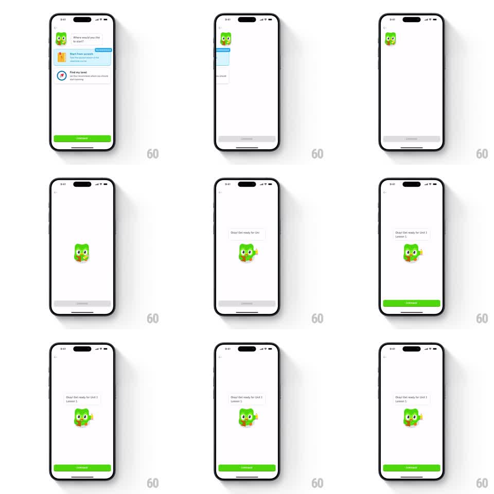

Media
Frame-by-frame

Rebuild this interaction 1:1: Duolingo's get-ready beat - the onboarding options slide away, Duo lands center-screen, a speech bubble springs in with the unit announcement, and the continue button lights up green.

Rebuild this interaction 1:1: Duolingo's get-ready beat - the onboarding options slide away, Duo lands center-screen, a speech bubble springs in with the unit announcement, and the continue button lights up green. ## Integration Integration: stack-agnostic spec - springs given as stiffness/damping, timed motions as duration + curve; map every value to your framework and animation library of choice. ## Scene Duolingo's onboarding screen "Where would you like to start?" with Duo in the corner, two option cards, and a greyed continue button. On selection, the whole layout exits left, leaving Duo alone at center on a white screen. A speech bubble pops in above him - "Okay! Get ready for Unit 1 Lesson 1" - as Duo shifts into a ready pose with a raised wing, and the bottom continue button fills green, becoming active. ## Motion spec Pattern: exit, mascot beat, button activation, ~1.5s total. - The options list and header slide off to the left (350ms, ease-in) while Duo detaches and glides to center (spring stiffness 300 damping 24). - Duo does his ready transform: a quick anticipation crouch (scale 0.95, 100ms) then a springy pose change with wing raised (spring stiffness 380 damping 18). - The speech bubble scales in from its tail point (spring stiffness 400 damping 20), text already inside. - The continue button fills from grey to green (250ms) with a subtle scale pulse (1 to 1.03 to 1) marking it active. ## Calibration - One character, one bubble, one button - the white space is the staging. - Duo's pose change reads as eagerness: quick, springy, upright. ## Reduced motion Layout crossfades; button fills without pulse. ## Don't miss - Duo travels from the corner to center - he is the continuity between the two layouts. - The bubble grows from its tail, anchored to Duo.